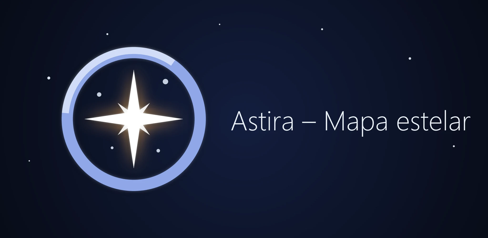

EL CIELO SIGUE TU MOVIMIENTO
En el modo en vivo, el sensor de orientación dirige la vista: mueve el dispositivo y el mapa se mueve contigo — con suavidad y con corrección de la declinación magnética de tu ubicación. ¿Prefieres la forma clásica? Explora el cielo deslizando y pellizcando para acercar.

TOCA Y ENTIENDE
Toca cualquier objeto para saber más sin salir de la vista: nombre propio y designación de catálogo, distancia, brillo, clase espectral y temperatura, y en muchas estrellas brillantes también radio y masa — además de las horas de salida, culminación y puesta para tu lugar.

ENCUENTRA LO QUE BUSCAS
Busca estrellas, planetas, constelaciones y objetos de cielo profundo por nombre o número de catálogo — M 31, NGC 224 y Andrómeda llevan al mismo objeto. Si queda fuera de la pantalla, una flecha señala el camino y el ángulo. Y si aún no sabes qué buscar: «Visible esta noche» te nombra los objetos más interesantes de la noche, con altura y ventana de observación. Una entrada a la astronomía sin conocimientos previos, y en el primer inicio un breve recorrido te guía por el manejo.

LO QUE VERÁS
- Unas 8.900 estrellas — todas las visibles a simple vista (hasta magnitud 6,5)
- El Sol, la Luna (con su fase) y todos los planetas, con su visibilidad y el estado del crepúsculo
- Los 109 objetos Messier y más galaxias, nebulosas y cúmulos brillantes
- Capas que puedes activar y desactivar: constelaciones, Vía Láctea, sistema solar, eclíptica, trayectorias orbitales (±30 días)
- Ubicación por GPS o manual, momento libremente ajustable — mira hoy el cielo de mañana
EL TIEMPO EN CÁMARA RÁPIDA
La cámara rápida te muestra cómo las estrellas recorren el cielo, hacia delante y hacia atrás. Así ves ponerse un objeto, recorres una noche entera o sigues a la Luna por sus fases.
ECLIPSES DE SOL Y DE LUNA
Astira calcula qué eclipses se ven desde tu lugar: cuándo empiezan y cuánto queda cubierto. Un toque y la cámara rápida lo reproduce.

ALINEACIÓN PRECISA
¿El mapa se desvía un poco? Le pasa a toda brújula de teléfono. Apunta a una estrella que conozcas, tócala, pulsa «Alinear aquí» — listo. El mapa coincide con tu cielo en vez de dejarte adivinando.
EL CIELO SOBRE TU ENTORNO
Activa la imagen de la cámara y el mapa estelar se superpone a lo que tienes realmente delante: el horizonte, los árboles, los tejados. En vez de unir mapa y realidad mentalmente, apuntas el dispositivo hacia donde buscas. La imagen solo se muestra: nunca se captura, ni se guarda, ni se transmite.
HECHO PARA OBSERVAR
- El modo nocturno en rojo intenso conserva tu adaptación a la oscuridad
- La pantalla se mantiene encendida mientras observas
- Estrellas con colores realistas (según el índice de color) y tamaño según el brillo
- Límite de magnitud ajustable, distancias en años luz o pársecs
COMPLETAMENTE SIN CONEXIÓN — Y PRIVADO
Astira no necesita internet: todos los cálculos se hacen en tu dispositivo. La aplicación no tiene permiso de internet, no muestra publicidad y no contiene rastreo. Tu ubicación solo se usa en el dispositivo para calcular la vista del cielo — ideal también para lugares de observación lejos de la ciudad (y de la cobertura).
PRECISIÓN
El cálculo de posiciones sigue los métodos estándar de la literatura astronómica — las posiciones de los planetas se desvían menos de un minuto de arco de la referencia del JPL.
FUENTES DE DATOS
Catálogo de estrellas: base de datos HYG (CC BY-SA) · Objetos de cielo profundo: OpenNGC (CC BY-SA) · Detalles en la pantalla de créditos de la aplicación.
Nota: la precisión de la brújula de un teléfono suele ser de ±5–10°. Con la calibración guiada y la alineación con estrellas identificarás igualmente cualquier objeto con seguridad.